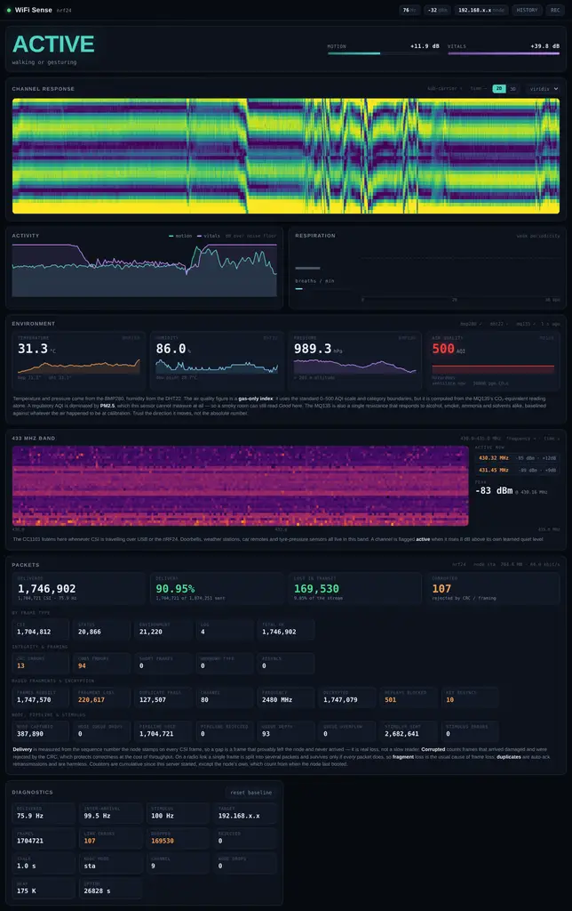

WiFi Sense extracts raw 802.11 CSI to detect human motion and respiration. No cameras. No radar. Just radio waves.

Isolates tiny Doppler shifts. A chest moving just 6mm during breathing is perfectly resolved at 0.13–0.7 Hz.
No optical sensors. Operates in total darkness. Detects presence without capturing images.
CSI data is routed over an AES-128 encrypted nRF24 radio link to prevent measurement corruption.
100Hz UDP stream pushed to the ESP32. Raspberry Pi handles filtering, peak picking, and a live WebGL dashboard.
> git clone https://github.com/The-Masked-Bear/wifisense-pi
> cd wifisense-pi && python3 -m venv .venv
> ./.venv/bin/pip install -r requirements.txt
> cd pi && ../.venv/bin/python -m wifisense --link synthetic
> DASHBOARD LIVE ON PORT 8080